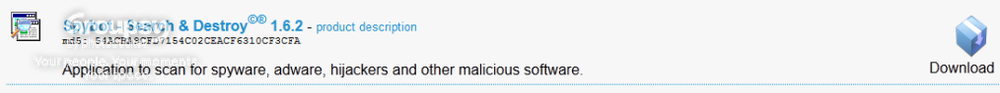
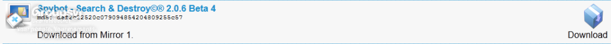
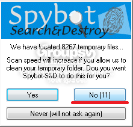
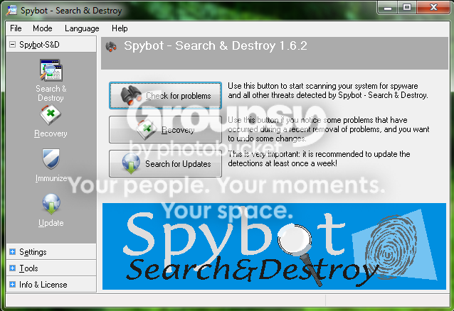
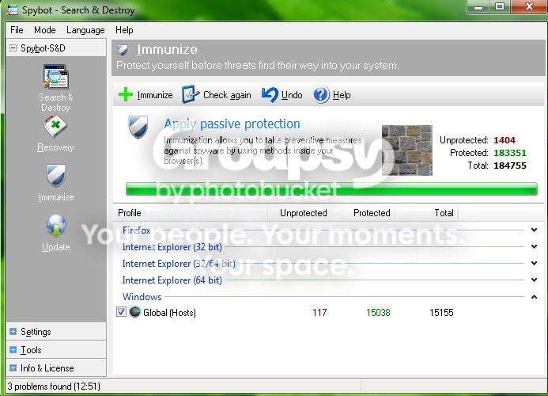

กระทู้แนะนำโปรแกรมเพื่มความปลอดภัยสำหรับคนใช้อินเตอร์เนท

คอมพิวเตอร์ที่ใช้อยู่ปลอดภัยแล้วจริงหรือ? 4 คอลั่มสั้นๆที่น่าอ่าน
The four columns of security for a safe online experience
http://www.safer-networking.org/en/arti ... lumns.html
อะไรคือ Attack Site?
คือเว็บไซด์ที่อันตราย เมื่อเราเข้าเว็บไซด์อันตราย พวกลิ้งค์, Page, โฆษณาต่างๆ ที่จะเริ่มดาวโหลดเก็บเข้ามาในเครื่องของเราทันที รวมทั้งพวก ActiveX สคริปอันตรายจะสั่งให้เครื่องเราดาวโหลดไฟล์เพิ่มเติม แล้วติดตั้งโปรแกรมแบบลับๆ โดยที่เราไม่รู้ตัวหรือไม่ได้รับอนุญาตทันที
http://www.mozilla.org/firefox/its-an-attack.html
http://en.wikipedia.org/wiki/Wikipedia:Attack_sites
วิธีการป้องกันตนเองจาก Phishing
- Do not enter important data onto any form that is not SSL encrypted (SSL addresses begin with https:// instead of http://).
- Never use links from emails that appear to lead to password-protected services you have subscribed to (banks, mail accounts, everything that needs a login).
- Always log in from your own bookmark or by typing in the URL only, and always check the URL field if it still is correct.
ข้อมูลเพิ่มเติมเกี่ยวกับ Phishing
http://www.safer-networking.org/en/arti ... shing.html

Spybot - Search & Destroy
http://www.safer-networking.org/en/home/index.html
ข้อดีหลักๆ
- เป็นโปรแกรม Anti-Malware ซึ่งไม่เหมือนกับ Anti-Virus สามารถกำจัด Malware , Spyware , Adware เป็นโปรแกรมที่ออกแบบมาเพื่อจัดการมัลแวร์โดยเฉพาะ อีกทั้งยังสามารถกำจัดไวรัสได้อีกด้วย
- สามารถทำ Immunize ป้องกันการปรับเปลี่ยนข้อมูลในเว็บเบราเซอร์ Web Browser ของเรา ป้องกันอันตรายจากพวก Attack Site ได้ (ยกตัวอย่างกรณี เข้าเว็บ m-zeny แล้วโดนแฮคไอดีเกม หรือแม้แต่การเข้าไปอ่าน Blog ของผู้ไม่ประสงดีก็ยังสามารถโดนโจมตีได้
- ฟรี...)
Note!!
- สำหรับการสแกนตรวจจับ หรือทำ Immunize เพียงอย่างเดียวแนะนำให้ใช้เพียง เวอร์ 1.62 ก็เพียงพอแล้ว โดยไม่จำเป็นต้องเลือกเมนูเสริมการติดตั้ง Teatime และ Fulltime ระหว่างการติดตั้งเวอร์ชั่น 1.6.2
- สำหรับคนที่ต้องการ Live Protection มีการสแกนตรวจสอบตลอดเวลา และฟังก์ชั่นเสริมอื่นๆ แนะนำให้ใช้เวอร์ชั่น 2.0+ เป็นต้นไป
ลิ้งค์ดาวโหลด
http://www.safer-networking.org/en/download/index.html


Spybot 2 - Overview http://www.safer-networking.org/en/spybotsd2/index.html
การทำ Immunize
หลักๆคือการเพิ่มรายชื่อ Block , Blacklist Site ที่อันตรายที่ขึ้นชื่อว่า Attack Site ป้องกันไม่ให้มันรันตั้งแต่ต้น หรือทำให้ลิ้งดาวโหลดขาด รันแล้วแต่ดาวโหลดไม่สำเร็จ ดีกว่าเรามานั่งวัดดวงเสี่ยงว่า โปรแกรมแอนตี้ไวรัส, total internet security ของเราจะสแกนตรวจพบเจอหรือไม่เจอ (ไม่เจอก็เละ ;w;)
ขั้นตอนก่อนทำ Immunize
- (สำหรับ Window Vista, 7) จำเป็นที่จะต้องรันโปรแกรมด้วยอำนาจแอดมิน คลิกขวาที่โปรแกรมแล้วเลือก Run as admin
- ทำการ Update data Base ข้อมูลโปรแกรมของ Spybot ให้หมด แล้วทำการรีสตาร์ทโปรแกรมใหม่ (ตอนอัพเดทจะเลือกดาวโหลดไฟล์จากเซิฟเวอร์ไหนก็ได้)
- ปิด Web-Browser ที่ใช้อยู่ให้หมด ~(-w-
วิธีการทำ Scan + Immunize ในเวอร์ชั่น 1.6.2
คำเตือน!!! ถ้าโปรแกรมถามว่า

กด NO เด็ดขาด


*หมายเหตุ* เมื่อมี Update Immunization Database ให้เรา undo ของเก่าก่อน แล้วจึง Apply ทำใหม่ซ้ำไป
Safe travel on internet and DO avoid a stray arrow in your knee.